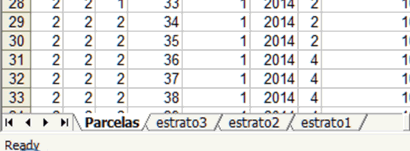

Al finalizar el
procesamiento, los resultados del inventario de plantaciones genera
un archivo excel con cuatro hojas;
Parcelas,
estrato3, estrato2 y estrato1

La estructura de
columnas de los resultados es la misma para las cuatro hojas,
aunque en las estrato1, 2 y 3; se calcula los promedios del
estrato, los desvíos y el conteo de parcelas en el estrato,
para cada una de las siguientes variables:
str1: estrato 1, código numérico
de asignación de unidades del estrato 2, en el estrato
administrativo o silvícola de orden 1, superior
p. ej.
[1.2.3....n]
str2: estrato 2, código numérico
de asignación de unidades del estrato 3, en el estrato
administrativo o silvícola de orden 2, intermedio
p. ej.
[1.2.3....n]
str3: estrato 3, código numérico
de asignación de parcela a un estrato administrativo o
silvícola de orden 3, inferior
p. ej.
[1.2.3....n]
parcela: código numérico de
identificación de la parcela para la que se reportan los
resultados.
p. ej.
[1.2.3....n]
inventario: Código numérico que indica
el número de inventario secuencial [1.2.3....n]
Fecha: fecha de medición [año] p.
ej.. [2014]
sp: código numérico de
identificación de especie dominante de la parcela
Superficie: [m2]Superficie de la parcela en metros
cuadrados
N
[pl/ha]: Número de árboles vivos /
ha
Gvivo
[m2/ha]:Área basal de
los árboles vivos [m2/ha]
Dg
[cm]: Diámetro del árbol de
sección promedio (árboles vivos)
DR:
Densidad Relativa, Índice de
Densidad de Rodal, Curtis (1982)
VBrt
[m3/ha]: Volumen bruto de fuste de los
árboles vivos por hectárea
VPtaFina[m3/ha]_#mm: Volumen de fuste hasta punta fina # mm en
m3/ha
EAP
[años]: Edad a la altura del
pecho
ETOT
[años]: Edad total
ESBELTEZ: Coeficiente de esbeltez, calculado
como el cociente entre altura total y el dap de cada árbol y
luego promediado, expresado en las mismas unidades
FH: Factor de Altura, Índice de Densidad
del Rodal, Andenmatten (1998)
H100
[m]: Altura
dominante del rodal, según Asmann (1970)
D100
[cm]: Diámetro promedio de los
árboles dominantes.
IS
[m]: Índice de sitio de
rodal, de acuerdo a Andenmanten et al (1997) para las especies de
coníferas plantadas en Patagonia.
Vol. Producto_#
[m3/ha]: Volúmen acumulado del producto
Nro # expresado en metros cúbicos por
hectárea.
Cant.
Producto_#: [número
de piezas/ha] Cantidad de piezas acumulada del producto Nro #
expresado en metros cúbicos por hectárea.